The Brain Brake · boards · private
VERSION FIVE · THE MENTOR
Six scenes · thirty six panels · Manan on camera throughout · 11.8.2026
Manan is the film. He is on camera in all six scenes, speaking, in his own room, and the
drawn world supports him instead of carrying him. The structure is the oldest one there is: a boy with a
question, and a teacher who is not what he expected.
Why this version exists, and it is the rubric rather than taste. The competition scores
four things equally: engagement, illumination, creativity, difficulty. Illumination asks whether the
viewer developed genuine understanding, and a film with no words cannot compete on a quarter of the
score. Judges are reading the student and not the film. A past winner recommends the student be on screen
for at least forty percent of the running time. Version four had him on for eight seconds out of a
hundred and twenty. Read it against
version four and
the
original.
SCENE 1 OF 6
THE CALL
0:00 – 0:18
Manan in his own room, talking to us. He plays the thing that started it: a man with nothing left who suddenly sprints. He does not perform the question, he asks it, and then he goes looking for the answer.
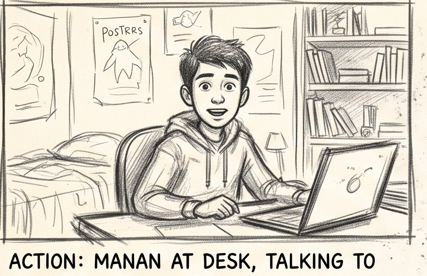
SCENE 1
ACTION: Manan at desk, talking to camera, laptop open.
DIALOGUE: MANAN: Watch this. PANEL 1
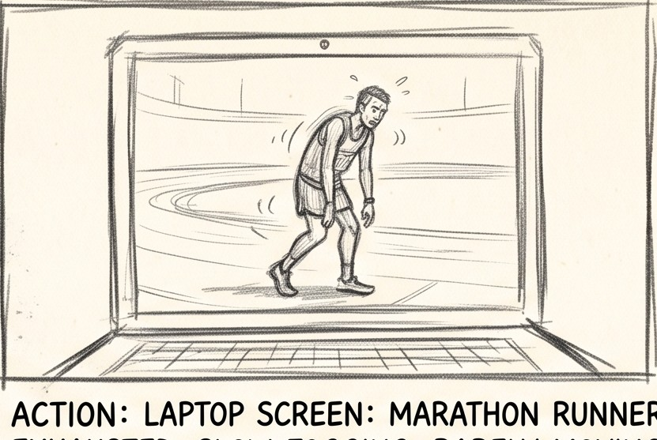
SCENE 1
ACTION: Laptop screen. Marathon runner, exhausted, barely moving.
DIALOGUE: (No Dialogue) PANEL 2
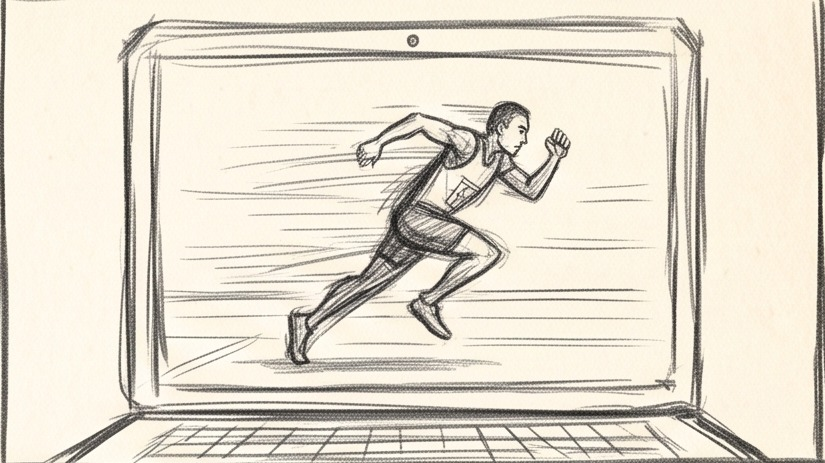
SCENE 1
ACTION: Laptop screen. The runner bursts into a sprint.
DIALOGUE: (No Dialogue) PANEL 3
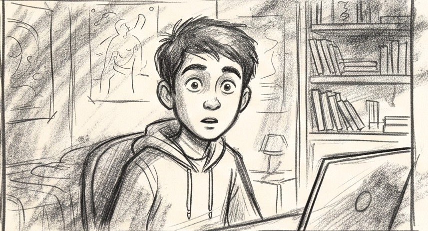
SCENE 1
ACTION: Manan back to camera, surprise and wonder.
DIALOGUE: MANAN: He had nothing left. PANEL 4
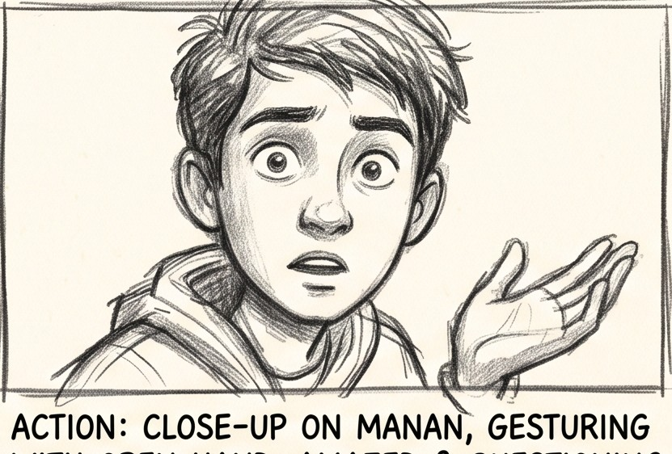
SCENE 1
ACTION: Close on Manan, open hand, amazed and questioning.
DIALOGUE: MANAN: So where did that come from? PANEL 5
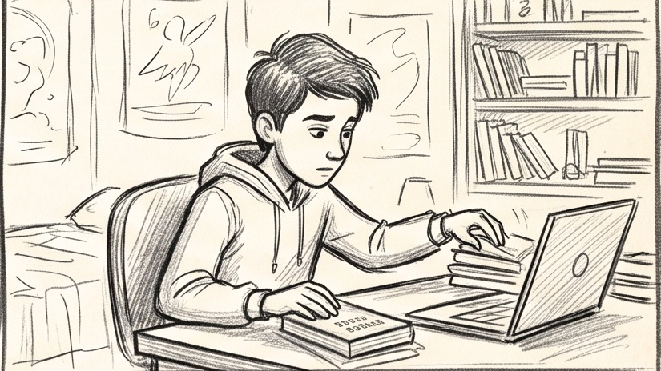
SCENE 1
ACTION: Manan reaches for a book on the desk.
DIALOGUE: (No Dialogue) PANEL 6
SCENE 2 OF 6
THE OLD MASTER
0:18 – 0:40
He goes to the answer science gave in 1923, and he gives it its due. The drawn world arrives for the first time, small, rising out of the open book on his desk. Hill is honoured, not mocked. And then the doubt.
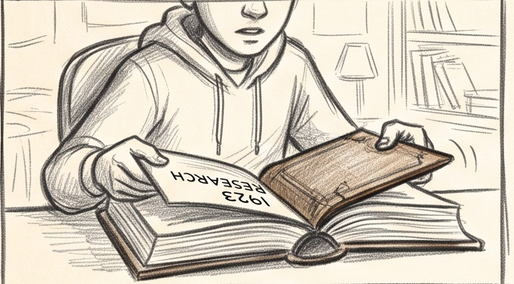
SCENE 2
ACTION: Manan opening an old book flat on the desk.
DIALOGUE: MANAN: Science answered this in 1923. PANEL 1
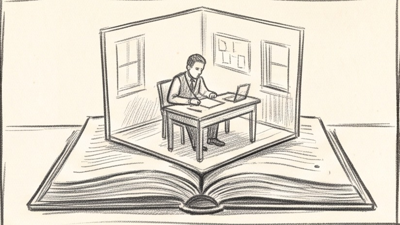
SCENE 2
ACTION: A small drawn room rises out of the open pages, a man at a desk inside it.
DIALOGUE: (No Dialogue) PANEL 2
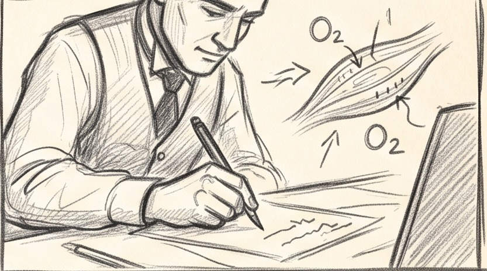
SCENE 2
ACTION: Close on the drawn man, writing.
DIALOGUE: MANAN: The muscle runs out of oxygen. PANEL 3
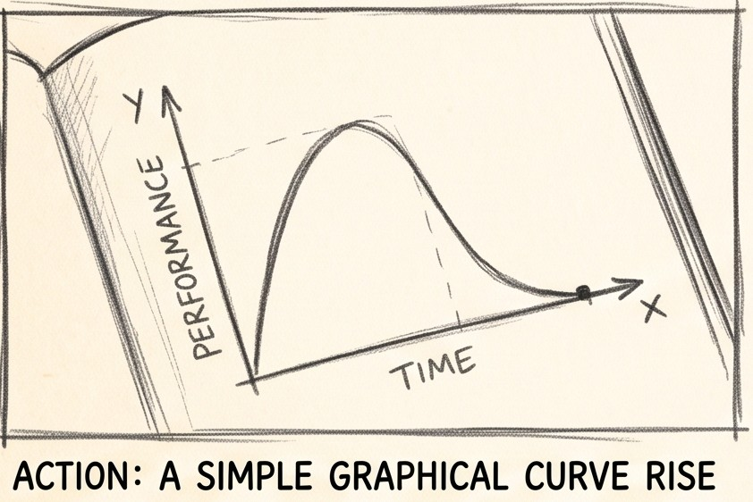
SCENE 2
ACTION: A simple curve rises and falls, drawn out of the writing.
DIALOGUE: MANAN: The muscle stops. PANEL 4
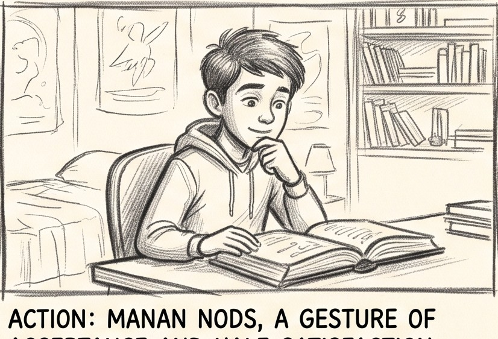
SCENE 2
ACTION: Manan nods. Acceptance, half satisfied.
DIALOGUE: MANAN: Good answer. PANEL 5
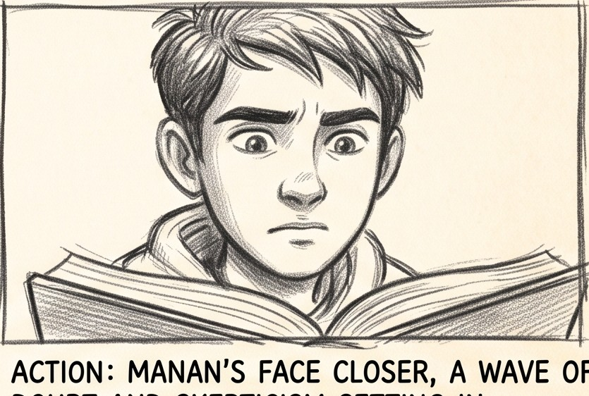
SCENE 2
ACTION: Closer on Manan. Doubt arriving.
DIALOGUE: MANAN: But not a complete one. PANEL 6
SCENE 3 OF 6
WHAT DOES NOT FIT
0:40 – 0:58
The drawn world crosses into his. The runner leaves the page and comes out onto the wooden desk, and he speeds up, which the curve on the page cannot allow. Manan runs out of answers on camera, which is the most useful thing a student can do.
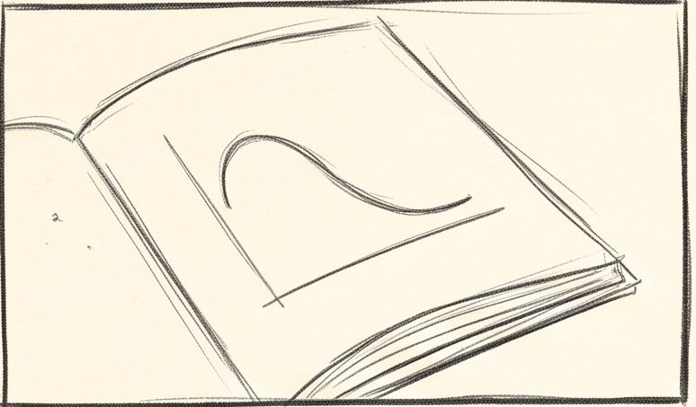
SCENE 3
ACTION: A drawn curve on the open page.
DIALOGUE: (No Dialogue) PANEL 1
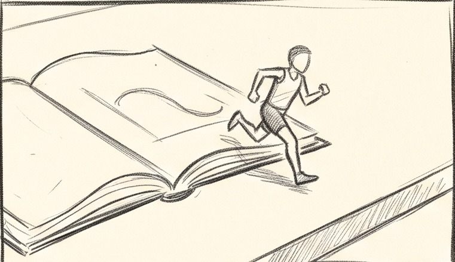
SCENE 3
ACTION: A small drawn runner running out of the book onto the wooden desk.
DIALOGUE: (No Dialogue) PANEL 2
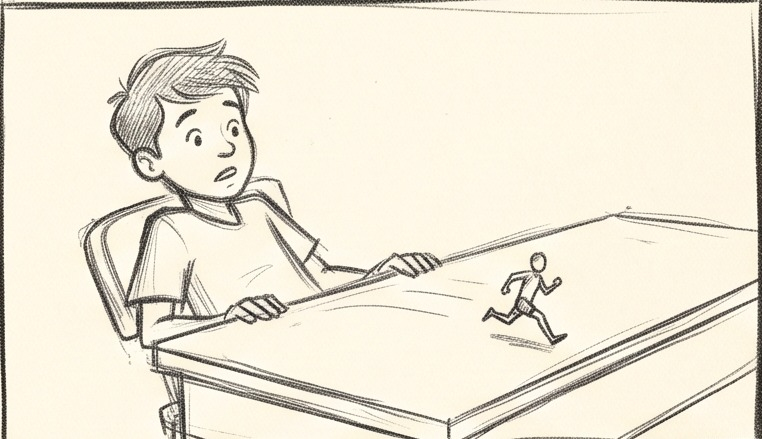
SCENE 3
ACTION: Manan leaning back, startled, watching the tiny runner cross his desk.
DIALOGUE: MANAN: Wait. PANEL 3
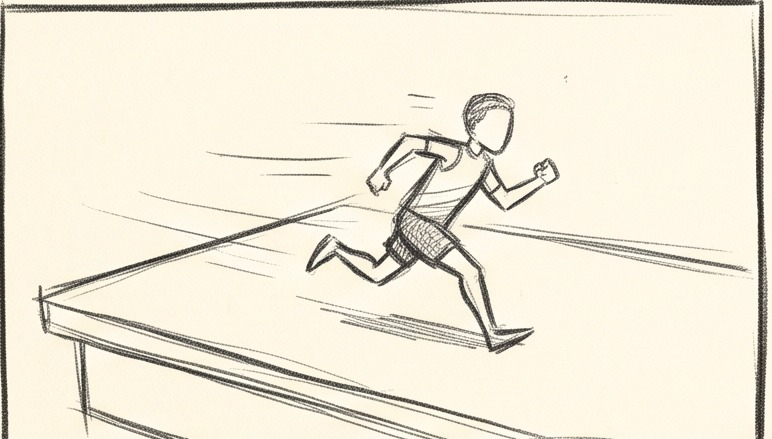
SCENE 3
ACTION: The tiny drawn runner speeding up on the desk.
DIALOGUE: MANAN: He is getting faster. PANEL 4
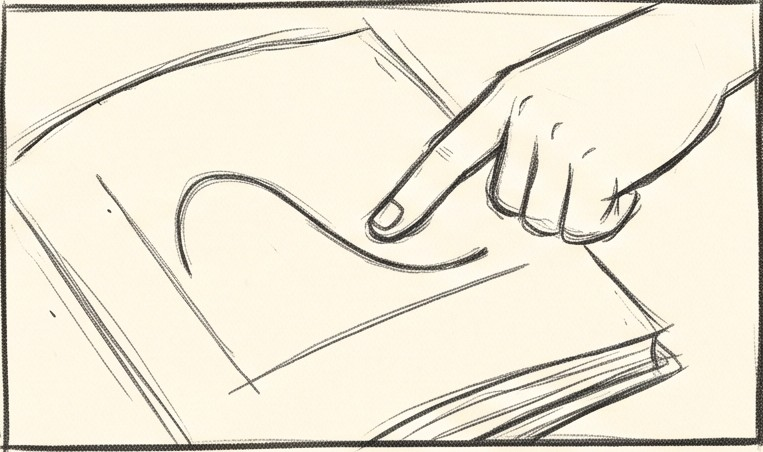
SCENE 3
ACTION: Manan's finger pointing down at the drawn curve.
DIALOGUE: MANAN: This cannot explain that. PANEL 5
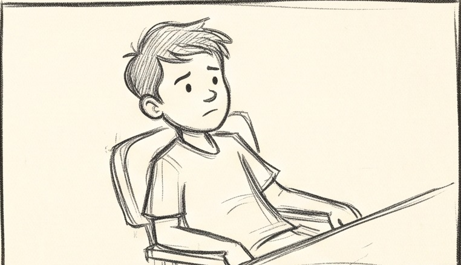
SCENE 3
ACTION: Manan sitting back, out of answers.
DIALOGUE: (No Dialogue) PANEL 6
SCENE 4 OF 6
THE MENTOR
0:58 – 1:25
The teacher arrives and he is a disappointment, which is the point. A small brain in a tracksuit with a mug of coffee, stepping off the page onto the desk. He is not a villain and never was. He is a professional with a better model of the situation than his student has.
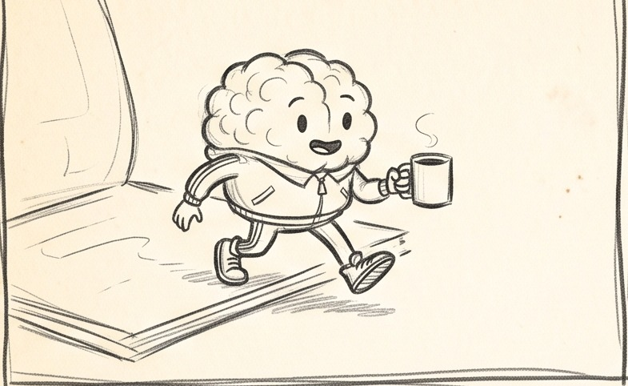
SCENE 4
ACTION: The brain steps off the drawn page onto the desk, holding a mug.
DIALOGUE: BRAIN: You rang? PANEL 1
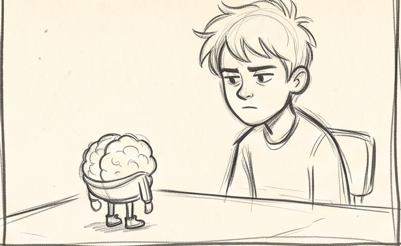
SCENE 4
ACTION: Manan staring at it, flat expression.
DIALOGUE: MANAN: Who are you? PANEL 2
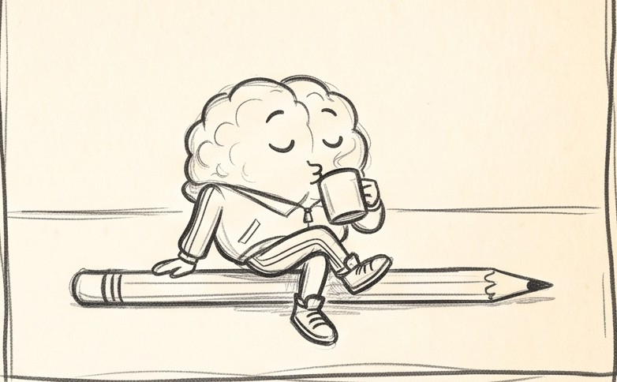
SCENE 4
ACTION: The brain sits down on a pencil, sipping coffee.
DIALOGUE: BRAIN: I run the brakes. PANEL 3
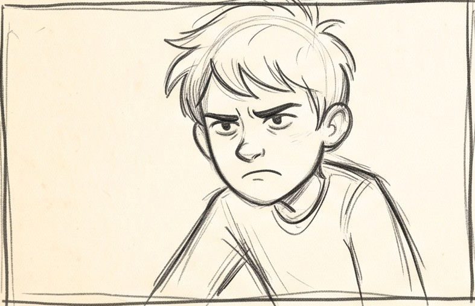
SCENE 4
ACTION: Manan frowning, leaning forward.
DIALOGUE: MANAN: So you stop me? PANEL 4
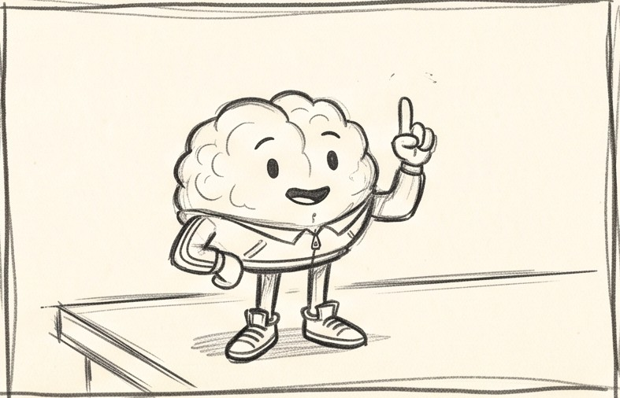
SCENE 4
ACTION: The brain standing calmly, one finger raised.
DIALOGUE: BRAIN: I finish you. PANEL 5
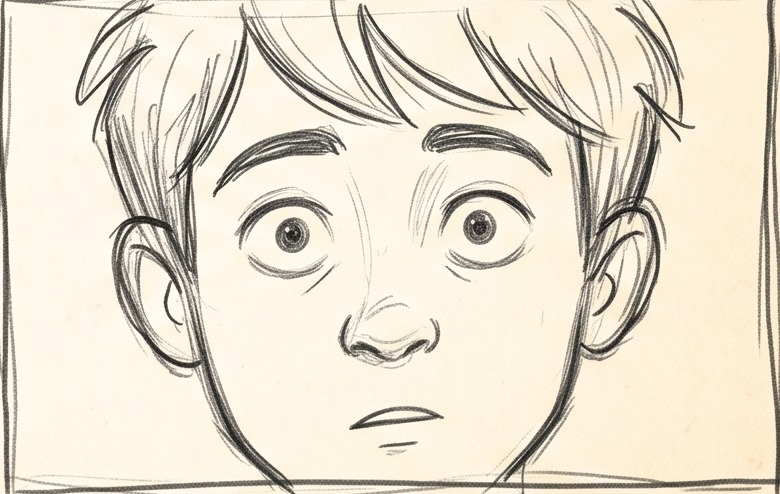
SCENE 4
ACTION: Close on Manan, beginning to understand.
DIALOGUE: (No Dialogue) PANEL 6
SCENE 5 OF 6
THE LESSON
1:25 – 1:48
The demonstration, and the climax. The lever goes to ninety five and never to a hundred, so the reserve is visible rather than described. Then Manan reaches into the drawing and takes hold of it himself, and the boundary the film is about is crossed from the other side.
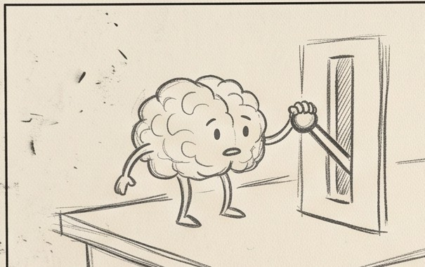
SCENE 5
ACTION: The brain pulling a drawn lever in a slot, standing on the desk.
DIALOGUE: BRAIN: Watch the limit. PANEL 1
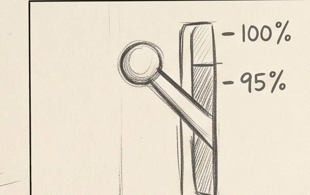
SCENE 5
ACTION: Close on the lever stopping short of the top of its slot.
DIALOGUE: BRAIN: Ninety five. Never a hundred. PANEL 2
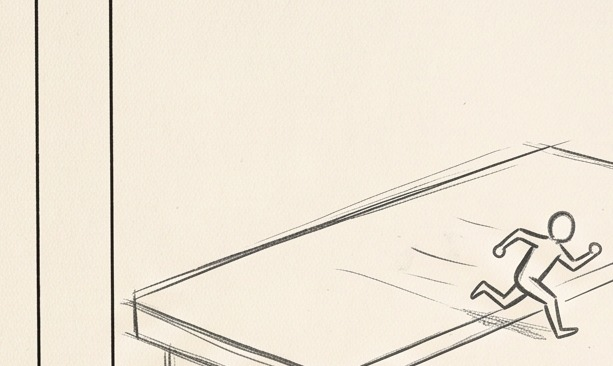
SCENE 5
ACTION: The tiny drawn runner on the desk surging forward.
DIALOGUE: MANAN: That was always in him. PANEL 3
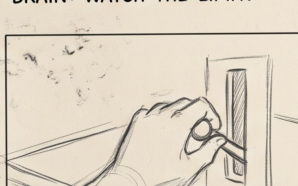
SCENE 5
ACTION: Manan's real hand reaching in and taking hold of the drawn lever.
DIALOGUE: (No Dialogue) PANEL 4
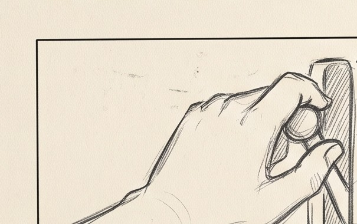
SCENE 5
ACTION: Close on the real hand pushing the drawn lever up.
DIALOGUE: BRAIN: Careful. PANEL 5
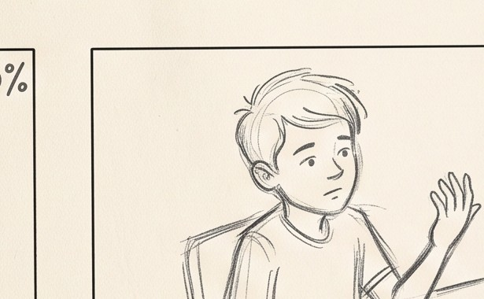
SCENE 5
ACTION: Manan looking at his own hand.
DIALOGUE: MANAN: The limit moves. PANEL 6
SCENE 6 OF 6
THE RETURN
1:48 – 2:00
Alone again, in his own room, in his own words. He states the idea plainly and without a flourish, which is what the judges are reading for. The brain is left small in the corner of the page, raising its mug, and says nothing.
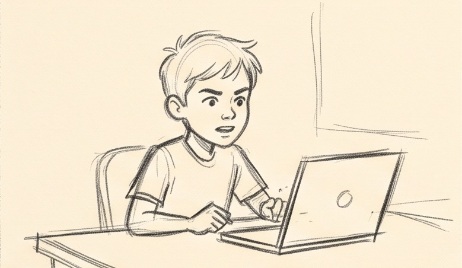
SCENE 6
ACTION: Manan at desk, talking to camera.
DIALOGUE: MANAN: Fatigue is not failure. PANEL 1
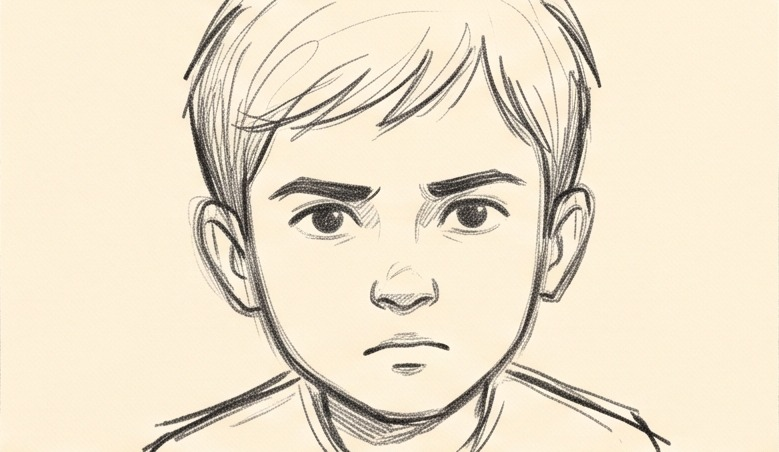
SCENE 6
ACTION: Close on Manan.
DIALOGUE: MANAN: It is protection. PANEL 2
SCENE 6
ACTION: Laptop screen, the runner sprinting again.
DIALOGUE: (No Dialogue) PANEL 3
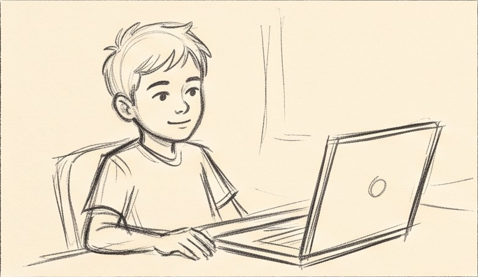
SCENE 6
ACTION: Manan watching the screen, calm posture.
DIALOGUE: MANAN: The wall is real. PANEL 4
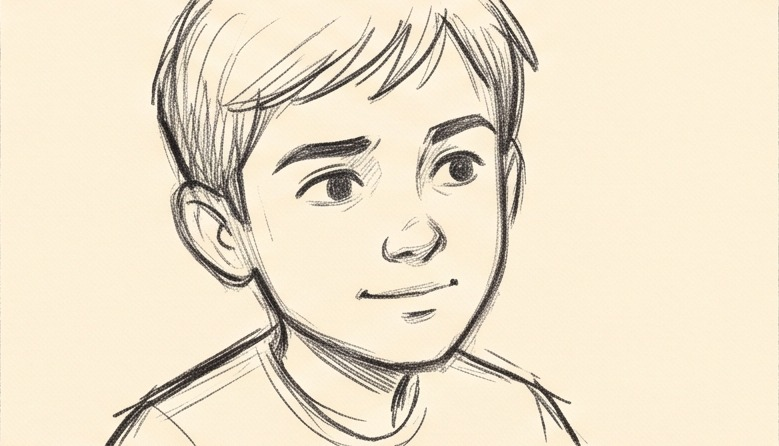
SCENE 6
ACTION: Close on Manan.
DIALOGUE: MANAN: But somebody built it. PANEL 5
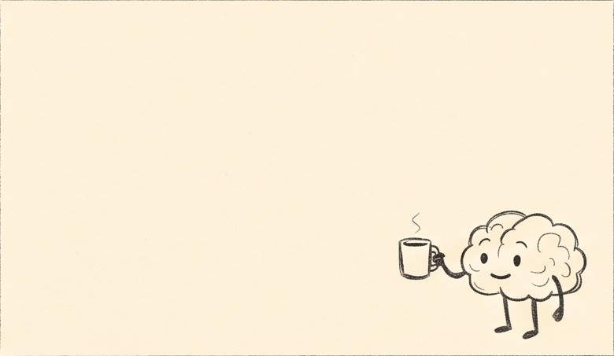
SCENE 6
ACTION: The little brain small in the corner, raising its mug.
DIALOGUE: (No Dialogue) PANEL 6
← version four, nine scenes · the original, six scenes